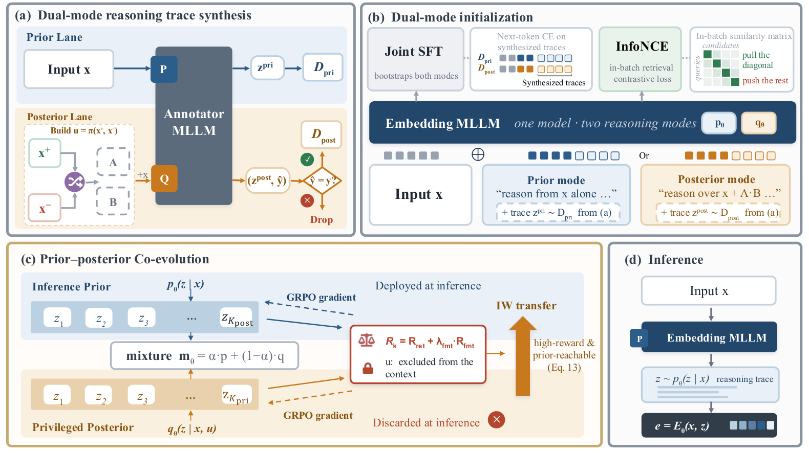
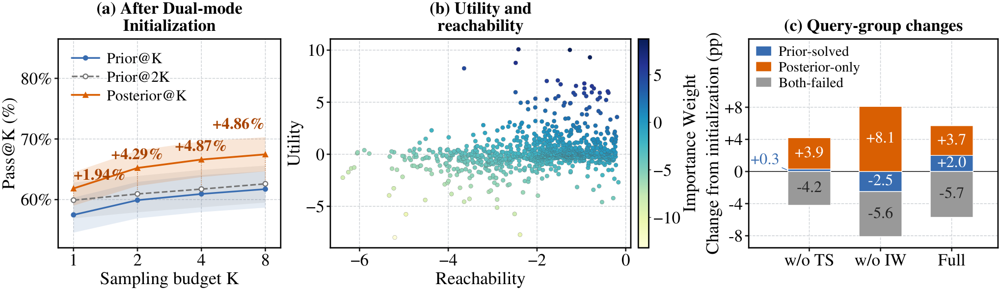

My take: teams doing multimodal retrieval with "reason first, then embed" models should read this closely; teams on plain dual encoders can borrow the idea. The paper calls its method PILOT (privileged-information-guided reasoning optimization and transfer). The core idea is to let the model see positive and negative candidates during training so it learns to reason in the right direction, and to keep only the candidate-free path at inference. On the 78-task MMEB-V2 (a multimodal embedding benchmark), the 2B model rises from 60.1 to 63.3 and the 7B model from 64.3 to 67.6, with the largest gains on visual documents (+6.1 and +6.4). These gains are over a baseline with the same data and backbone; across the full table, several methods trained on more data still score higher at 7B.
What problem does it solve?
A recent family of multimodal embedding models does not encode an image or text directly. A multimodal large language model (MLLM) first writes a short reasoning trace about the input, and the model then encodes the input together with that trace. For an invoice image, the trace might say "a 2024 restaurant receipt, about 300 yuan", so those cues end up in the vector.
The trouble is the training signal. Retrieval data says which candidate matches a query and which do not, but it never says what reasoning to write. Many traces are possible, and only some mention the detail that separates the positive from the negatives. Existing methods sample traces from the input alone and score them afterwards, so a useful trace that is never sampled can never be reinforced. That is the exploration bottleneck.
An illustration: the query is a photo of a red double-decker bus in London, and the negative is a red tram. Reasoning from the query alone, the model may write "a red public vehicle on a city street", which fits both. The useful words are "double-decker" and "bus".
Core idea: reasoning as a latent variable, with a prior and a posterior
The authors treat the trace as a hidden variable and let one MLLM play two roles through two prompts. The prior sees only the input and is used in training and at inference. The posterior sees the input plus a shuffled, unlabeled pair of candidates and is used only during training. Because it does not know which candidate is positive, it must compare them and guess, which pushes it to find distinguishing details instead of copying the positive.

How it works: three steps
First, offline synthesis. A stronger model, GLM-4.1V-thinking, writes a prior trace and a posterior trace with a guess for each training example. Posterior traces with a wrong guess are dropped. About 676K posterior traces pass, and about 787K original traces are kept for the prior.
Second, dual-mode initialization. Supervised fine-tuning (SFT) teaches the model both prompts, together with an in-batch contrastive loss on the reasoning-augmented embeddings.
Third, co-evolution. For each training input, the prior and the posterior each sample 8 traces, and every trace gets a retrieval reward. The candidates never enter the embedding being scored, so the posterior can only win by writing better reasoning.
The reward works like this. Each candidate's score is the exponential of its cosine similarity divided by a temperature of 0.2. The reward is the log of the positive's score over the sum of the negatives' scores, so 0 means a tie. With one negative, the reward is simply the cosine difference divided by 0.2. Cosines of 0.6 and 0.5 give 0.5, while 0.7 and 0.4 give 1.5, so the second trace is better. Both modes are then updated with GRPO (Group Relative Policy Optimization), which reinforces traces scoring above their group average.
Transfer: which posterior traces should the prior learn?
Only the prior runs at inference, so useful posterior traces must be transferred. Some traces depend on candidate details the prior can never see, and forcing the prior to copy them teaches it to make things up. The transfer weight, in log form, adds utility (the reward) and reachability, which is the log of the prior's probability of the trace minus the log of the mixture probability. With 8 samples from each mode, the mixture probability is half the prior's plus half the posterior's.
For example, if the prior gives a trace probability 0.001 and the posterior 0.02, the mixture is 0.0105 and reachability is about −2.35. Now take three traces: A has utility 6 and reachability −1, B has 8 and −5, C has 0 and −0.5. Their log weights are 5, 3 and −0.5, so after normalization A gets about 88%, B about 12% and C almost nothing. The highest-reward trace is not the one to learn, because the prior cannot reach it. The final objective adds prior GRPO (weight 1.0), posterior GRPO (1.0) and weighted SFT transfer (0.3).
Results
Image and video tasks use Hit@1, the share of queries whose correct result ranks first. Visual documents use nDCG@5, a top-5 ranking score. The overall score averages all 78 datasets. PILOT beats its direct baseline, UME-R1, on all 12 task groups at both sizes.
| Size | Method | Image | Video | Visual docs | Overall |
|---|---|---|---|---|---|
| 2B | UME-R1 | 66.1 | 41.8 | 63.8 | 60.1 |
| 2B | PILOT | 67.5 | 45.9 | 69.9 | 63.3 |
| 7B | UME-R1 | 70.9 | 47.3 | 67.1 | 64.3 |
| 7B | PILOT | 72.7 | 49.4 | 73.5 | 67.6 |
| 7B | RzenEmbed (5M+ pairs) | 75.9 | 55.7 | 77.1 | 71.6 |
The 2B PILOT even beats the 7B UME-R1 on visual documents (69.9 vs 67.1). At 7B, however, RzenEmbed, MMEmb-R1 (69.7) and TTE (68.6, a method with separate reasoner and embedder models) score higher overall. So this is a better training recipe, not a new state of the art.

The 2B ablations average three seeds. Prior-only SFT scores 59.0, dual-mode SFT 60.3, and direct distillation of posterior traces only 59.4. Prior-only reinforcement learning reaches 61.4, joint training 62.2, and weighted transfer 63.3. After initialization, the posterior's Pass@K rises from 61.8% to 67.5% as K goes from 1 to 8, beating the prior with twice the samples by 1.9 to 4.9 points. Transfer also lifts queries the prior alone can solve by 2.0 points, while uniform weights lower them by 2.5.
Limitations as I see them
- Online cost is high, because every query and candidate generates up to 1,024 tokens before encoding.
- The gains are relative to the authors' own baseline, and methods with more data still score higher.
- The analysis relies on an LLM judge, blind synthesis leaks candidate details in 79.6% of traces, and ablations cover only 2B.
How a retrieval team could try it
- Check the premise: try it only if you already run reasoning-augmented embeddings or can afford a generation step per query.
- Reproduce posterior synthesis on 10K examples with hard negatives, and measure guess accuracy and leakage.
- Compare prior-only SFT with dual-mode SFT offline, looking for about one point of gain.
- Add reinforcement learning and weighted transfer only if that holds, while tracking added latency.
Verdict
| Dimension | Assessment |
|---|---|
| Problem importance | Medium-high; reasoning-augmented retrieval is growing |
| Novelty | High; blind posterior and reachability-aware transfer |
| Evidence | Medium-high; clean gains over a matched baseline, but not the best overall |
| Engineering cost | High; strong annotator, multi-GPU RL, generation at inference |
| Worth trying | Yes for teams already using reasoning embeddings |
Discussion
Add experiment details, reproduction notes or a different take. Requires a GitHub sign-in.
Loading the discussion…